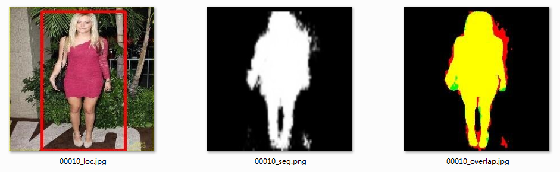

Object Extraction Dataset
Introduction:
This data set contains 10183 images with their segmentation masks.
Download The DataSet
image.zip: It contains the original images.
groundtruth.zip: It contains the groundtruth segmentation masks.
train.list: It contains the file names for the train set
test.list: It contains the file names for the test set
OD.list: It contains the file names which we collect data from the Object Discovery Dataset.
Our Results
Our results can be downloads here:result.zip
One of the results is shown below.

XXX_loc.jpg: A red box is drawn on the original image to indicate the localization of the object.
XXX_seg.png: A grey-scale image to show the final segmentation mask.
XXX_overlap.jpg: A 3-channel image which the groundtruth is set as green and our segmentation mask is set as red. Thus, the yellow part can be regard as their overlap.